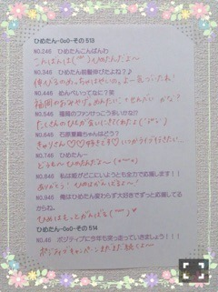

| 2015/05 16 Sat | ひめたん-OoO-その543 |
前回の日記にたくさんのコメント
本当にありがとうございました。
ちょっとずつ読んでます！
ひめたん成長したね～って
たくさん言われちゃった♡
今は乃木坂の活動が私の全てだから
悔しい気持ちも全部昇華できるよう
これからもがんばります！
前と変わらず、今回も
与えられたポジションを全うするので
どこにいても見ててね( ˇωˇ )
さて、のぎ天は観てくれたかな？
乃木團ライブin台湾
密着ドキュメント
前編・後編の2週に分けて
ライブ決定の発表から
バンド練習、本番までの様子を
密着していただきました！

普段はなかなかお見せしないような
不安・緊張・本音etcてんこ盛りな
ドキュメンタリーになってます(笑)
帰国してライブしたことを報告してから
オンエアまでタイムラグがあったので
やっと見てもらえるのが嬉しい～＊
バンド練習の様子なんかは
きっと新鮮だと思うし
いろんなハプニングも含めて
リアリティのある映像になってます
あ、台湾に向けて
レパートリーが増えました
「狼に口笛を」です
バンド隊がめちゃめちゃかっこいい！
日本でも演奏できたらいいな
後編は今週公開だよ～
観たら感想聞かせてね。
明日のらじらー！サンデーは
乃木坂担当週。
あーー2週間長かったよ～(∗ ˊωˋ ∗)
ゲストは声優アーツのコーナーに
every❤︎ing!
木戸衣吹さん、山崎エリイさん！
そして10時台は乃木坂46から
深川麻衣ちゃんが来てくれます！
まいまいの出演は
先週はお伝えしていなかったので
応援・質問のメッセージ
たくさん待ってるよ～♪
明日のコーナー「ひとりノリひめたん」
ってなんぞや......
なんか、もう、ハートが強くなる予感。
みなさんどうか
お手柔らかに(´,,•ω•,,｀)笑
どんどん迫ってくる図。
❁お知らせ❁
6/9 UTB+
6/20 月刊ヤングマガジン
どちらも4月ぶりです♡♡
また呼んでいただけるなんて
幸せ(´,,•ω•,,｀)
ヤンマガさん今回は
週刊ではなく月刊なのでお間違えなく。
発売近くなったらまた
詳しいことお話するね～
現在発売中のAKB新聞にも
インタビュー載せていただいてます！
他にもいくつか
撮影させていただいたので
情報解禁になるまで待っててね～
よろしくお願いしますっ

 好きなことにとことんこだわる派？
好きなことにとことんこだわる派？
それともいろんな事に
チャレンジしたい派？
チャレンジしないです私(笑)
これ！って決めたことを通す性格かな。
ひめたんはテンションを上げたい時
何をしますか？
音楽聴くとかかな？
ひめは最近気づいたけど
どちらかというとどうやら基本的に
テンション低い人間らしい(°ω°)ふはは
もしも高校時代の自分に
アドバイスするならば
なんて言いますか？
もっと高校生を楽しみなさいって
言ってあげたい(´xωx｀)
はやく卒業したい～って
当時は毎日のように言ってたけど
高校生は戻りたくても戻らないからねぇ
ひめたんは今まで徒歩で最長
何キロ歩いたことありますか？
あれ何キロあったんだろ？
高校の行事で「歩行会」があって
7、8時間ひたすら歩いたよ～
手がむくんでぬいぐるみみたいに
ぷにぷにになったの( >_< )
今年の夏も冷房の設定温度、
頑なに３０℃を貫くの？
メンバーが遊びに来ても？
まず今の時点でまだ
冷房つけてないからね(´｡･v･｡｀)
あ、なんのこっちゃって人いるよね
ひめは冷房が苦手なんですよ～
ひめたんの日記の
コメント欄下２ケタに46を踏んだ方へ
手書きでコメ返するコーナー
＼ ひめたん46 ／

最近久々に音楽プレイヤーに
曲を追加していろいろ聴いてる～
back numberさんの曲で
高校生の思い出がぶわ～って
蘇ってきたり
GReeeeNさんとかSEAMOさんとか
地元にいる時よく聴いてたので
楽しい記憶が蘇ってくる( ´｡•ω•｡` )
音楽のチカラって多分
こーゆーものなんだろうな～
(＊´・ω・＊)
コメント(971)
2015/05/16 23:36